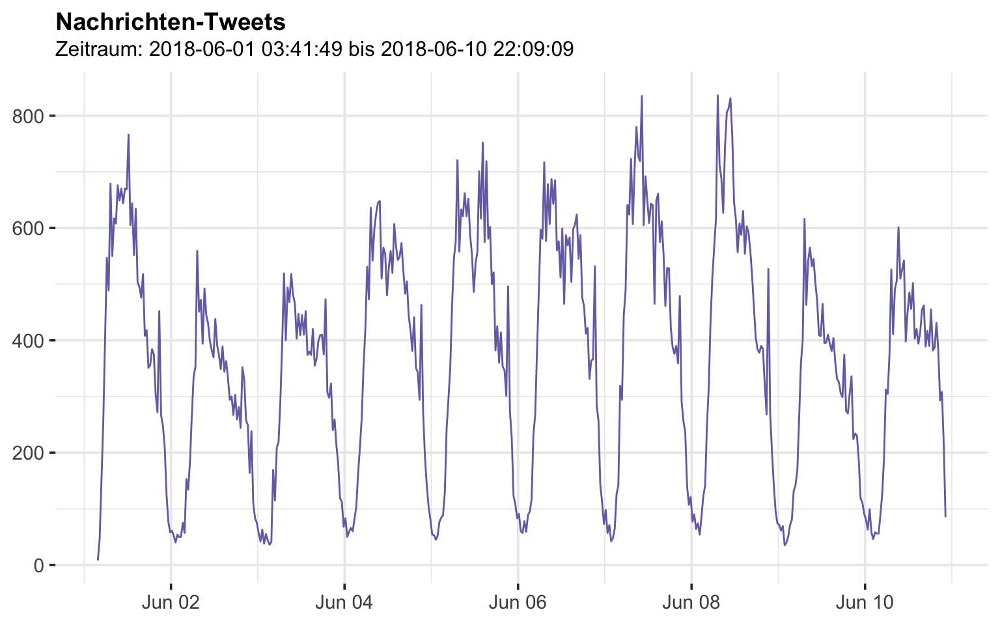
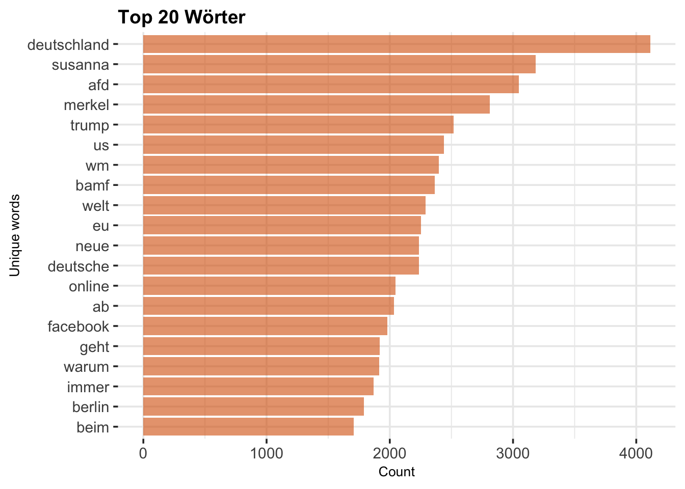
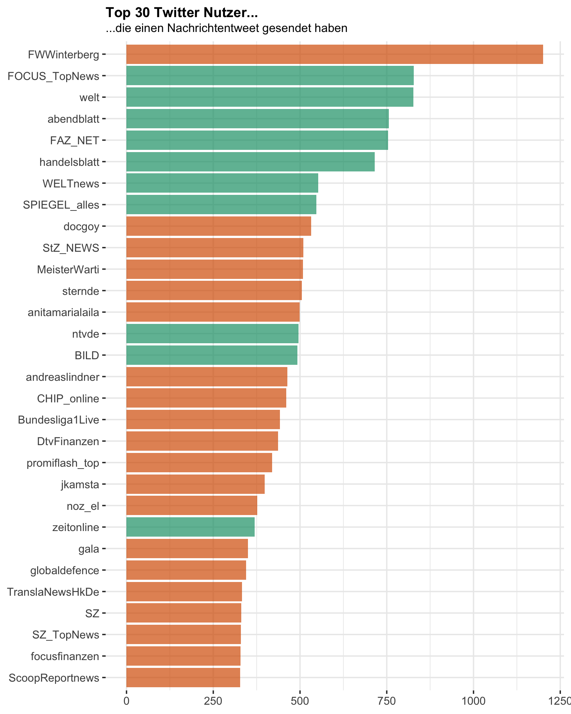
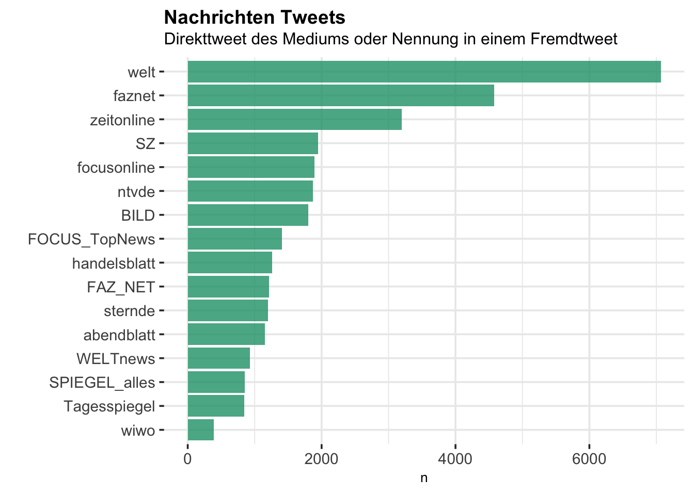
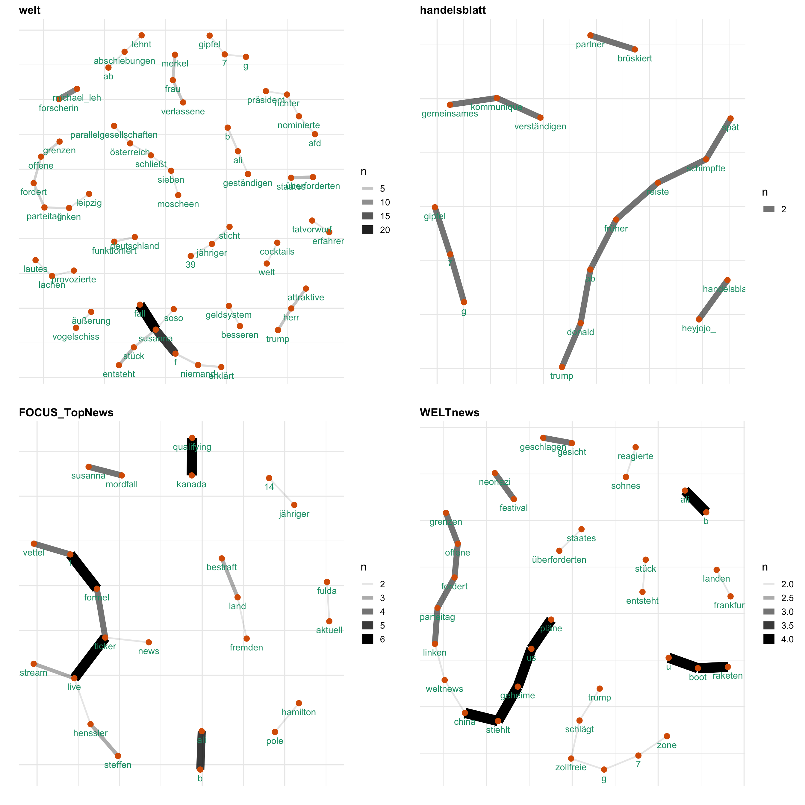
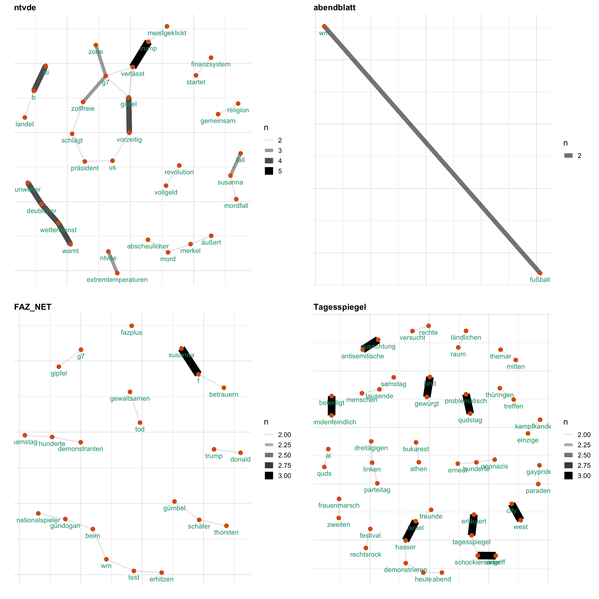
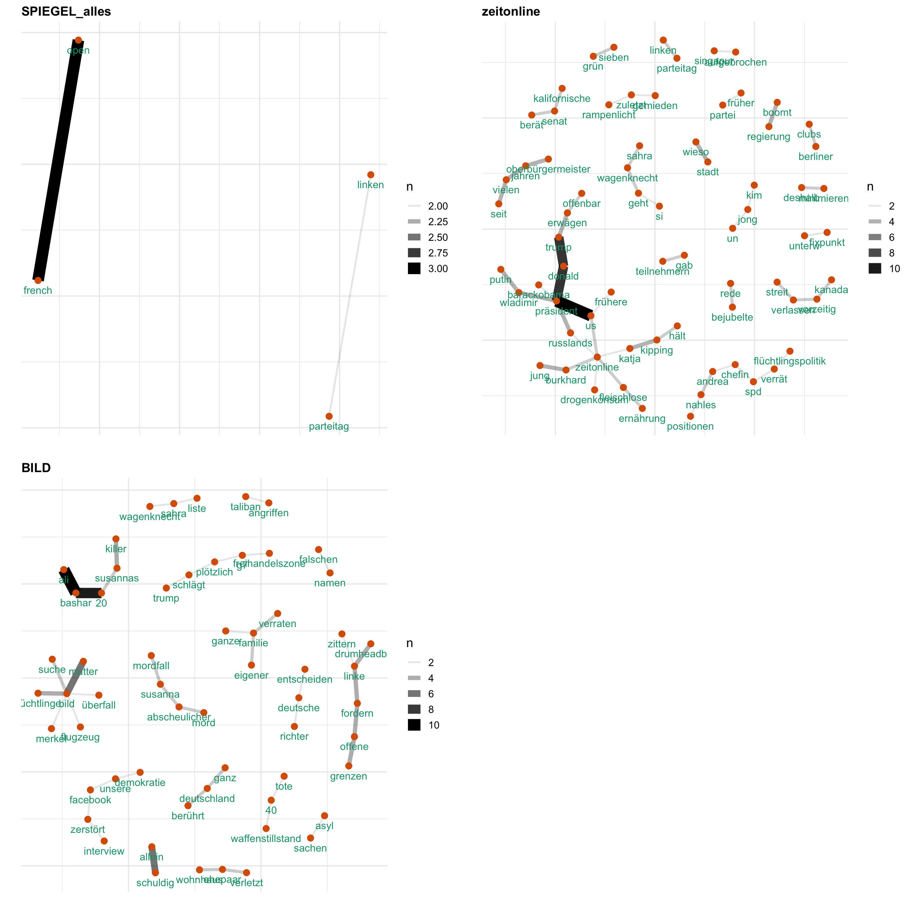

rm(list = ls())
## --- Load Packages --- ##
library(rtweet)
library(dplyr)
library(ggplot2)
library(rvest)
library(tidyr)
library(wordcloud2)
library(igraph)
library(ggraph)
library(stringr)
library(ggraph)
library(tm)
library(tidytext)
library(stringi)
library(patchwork)
## ---- My Functions --- ##
source("functions.R")
## --- Set Stylings --- ###
knitr::opts_chunk$set(message=FALSE, warning=FALSE)
theme_set(
theme_bw(base_size = 14) +
theme(
plot.title = element_text(face = "bold", size = 14,
margin = margin(0, 0, 4, 0, "pt")),
plot.subtitle = element_text(size = 12),
plot.caption = element_text(size = 6, hjust = 0),
axis.title = element_text(size = 10),
panel.border = element_blank()
)
)
## --- Global Variables --- ##
# Define Color
Mycol <- RColorBrewer::brewer.pal(8, "Dark2")
# Define http pattern
http <- paste(c("http.*","https.*"), sep = "|")
# Define Stopwords
stopwords <- data_frame(
word = stopwords("german")
) %>% rbind(
data_frame(word = c("t.co","via","mal","dass","mehr", "amp",
"schon","rt","gibt", "ja", "natürlich"))
)Welche Nachrichten-Inhalte werden aktuell bei Twitter diskutiert? Um das herauszufinden, haben wir die aktuellsten deutschsprachigen Tweets gesammelt, die einen Link zu einer Nachrichtenseite beinhalten. Die Tweets wurden mit Hilfe des R Packetes rtweet über die REST API ausgelesen. Der gesamte Code ist hier einzusehen.
Folgende Variablen sind in unserem Datensatz vorhanden.
load("../data/2018-06-09.Rda")
colnames(rt)## [1] "status_id" "created_at"
## [3] "user_id" "screen_name"
## [5] "text" "source"
## [7] "reply_to_status_id" "reply_to_user_id"
## [9] "reply_to_screen_name" "is_quote"
## [11] "is_retweet" "favorite_count"
## [13] "retweet_count" "hashtags"
## [15] "symbols" "urls_url"
## [17] "urls_t.co" "urls_expanded_url"
## [19] "media_url" "media_t.co"
## [21] "media_expanded_url" "media_type"
## [23] "ext_media_url" "ext_media_t.co"
## [25] "ext_media_expanded_url" "ext_media_type"
## [27] "mentions_user_id" "mentions_screen_name"
## [29] "lang" "quoted_status_id"
## [31] "quoted_text" "retweet_status_id"
## [33] "retweet_text" "place_url"
## [35] "place_name" "place_full_name"
## [37] "place_type" "country"
## [39] "country_code" "geo_coords"
## [41] "coords_coords" "bbox_coords"ts_plot(rt,"1 minute",
color = Mycol[3]) +
theme(plot.title = element_text(face = "bold")) +
labs(
x = NULL, y = NULL,
title = "Nachrichten-Tweets",
subtitle = paste("Zeitraum:",min(rt$created_at),"bis",max(rt$created_at))
)
Welche Tweets wurden am häufigsten geteilt? Die top 20 sind:
rt %>%
filter(is_retweet == FALSE ) %>%
dplyr::select(screen_name, text, retweet_count) %>%
group_by(screen_name, text) %>%
summarise(retweet_count = sum(retweet_count)) %>%
arrange(desc(retweet_count)) %>%
.[1:20,] %>%
#knitr::kable(align = "l")
htmlTable::htmlTable(align="l")| screen_name | text | retweet_count | |
|---|---|---|---|
| 1 | MalteKaufmann |
AfD in #Bayern jetzt auf Platz 2. ✊ Immer mehr Bürger wachen auf. #CSU hat gnadenlos versagt und #SPD braucht kein Mensch mehr.👏👏👏 @AfD_Bayernhttps://t.co/CQTBdMRqTo |
225 |
| 2 | Birgit_Kelle | Nicht die Talkshows sind Schuld am Aufstieg der AfD. Sondern Politik, die den wichtigen Themen ausweicht. Die Angst vor der Debatte. Mein Kommentar bei @focusonline https://t.co/1JP6oLCbmC | 224 |
| 3 | F_von_Steiner | Vermisstensuche in Lohmar: 13-jährige Michelle seit fünf Wochen vermisst - Polizei und Familie bitten um Mithilfe https://t.co/SLoZPfUrMF via @focusonline | 120 |
| 4 | Ich_bin_ich_666 |
„Niemand erklärt ihnen, wie Deutschland funktioniert!" Oh sorry, unser Fehler!! Ich fange sofort damit an. Als erstes: HIER TÖTET MAN NICHT! https://t.co/qwSlTYTD66 |
109 |
| 5 | _donalphonso | Wer glaubt, alle seien gegen Trump, hat einfach Salvini und Grillo nicht zugehört. Für die sitzt der Feind nicht in Washington, sondern in Brüssel und Berlin. https://t.co/8NOMMOLM8t | 102 |
| 6 | JoanaCotar |
Große Klappe, nichts dahinter. Hat „Mama“ Merkel angerufen @Philipp_Amthor? 😅 https://t.co/Uymrija0EK |
102 |
| 7 | aufklaerer2017 | Liebe @Die_Gruenen liebe #Linke und liebe Gutmenschen! Bewaffnet euch mit Teddybären und “Welcome Home” Schildern euer Flüchtling Ali B. kommt heute Abend aus seinem Kurzurlaub im #Irak zurück! Denkt drann liebe #ReconquistaInternet Leute er braucht LIEBE! https://t.co/dS1NjW1pmK | 95 |
| 8 | Heinrich_Krug | Wozu braucht Deutschland eine Partei, die sich für das Wohl von Migranten einsetzt, die nur vom Sozialsystem angelockt werden? #linkebpt https://t.co/6UpvycOBFu via @SPIEGELONLINE | 95 |
| 9 | LukasRilke | Was steckt hinter den Pfiffen gegen Gündogan? Mein Kommentar dazu. https://t.co/eifi5XpMHl via @SPIEGELONLINE | 89 |
| 10 | Georg_Pazderski | #Susanna. Überstürzte Flucht war angeblich nicht der Tat des Sohnes geschuldet. Für wie dumm halten die Mutter und die Medien eigentlich die deutschen Bürger? https://t.co/wt9r5gMyO4 | 78 |
| 11 | aufklaerer2017 | Die Flüchtlingsmutter des Irakischen Flüchtlings Ali Bashar, der Susanna getötet haben soll, bezeichnet die Sozialleistungen in Deutschland als “Gehalt” https://t.co/gGk4AdLpZ9 https://t.co/NKYNIQXBCV | 67 |
| 12 | winterfrank35 |
Wehrt euch gegen rechte Sprüche und Kommentare! Hitler hat so die Juden für alle verantwortlich gemacht! Die AfD macht die Flüchtlinge für alles verantwortlich, was schief läuft! Wehret den Anfängen! https://t.co/gFUQuRMAHg |
52 |
| 13 | APatzwahl |
Lesen Sie sich bitte diesen Schwachsinn der Mutter des Mörders Ali Bashar durch! Unglaublich! Will man uns für dumm verkaufen?😤 Es wird noch so kommen, daß dieser Knilch alles abstreitet und die deutsche Justiz ihn laufen läßt. #Susanna +++ https://t.co/ZV4Efmzas1 https://t.co/JW0blkUevO |
51 |
| 14 | MFeldenkirchen | Die AfD hat sich als Ballermannversion des deutschen Konservatismus entpuppt. Meine Kolumne im neuen @DerSpiegel https://t.co/765mLz6F0R via @SPIEGELONLINE | 48 |
| 15 | Netzfall | Die Polizei #Neubrandenburg fahndet nach der 32-jährigen Sandra Prinzler aus Kaschow bei Grimmen (Lkr. Vorpommern-Rügen). Die junge Frau wird seit dem 31. Mai, ca. 18:30 Uhr, vermisst. Weitere Infos: https://t.co/ffeLbgfTtw | 47 |
| 16 | aufklaerer2017 | 1600 radikale Muslime können während des #Ramadan in #Berlin auf die Strasse gehen und gegen #Israel demonstrieren. Bei der “Muslime gegen Terror” Demo in #Koeln sagte die #Ditib ab, im Ramadan sei das unzumutbar! https://t.co/qCfWmp3lHf https://t.co/T9W03gMrwK | 45 |
| 17 | ProAsyl | Das Gegenteil von #Bremen ist #Eisenhüttenstadt: Die dortige #BAMF-Außenstelle liegt bei Anerkennungsquoten weit unter’m bundesweiten Durchschnitt. »Dort finden die Anhörungen eindeutig mit dem Ziel statt, dass der Antrag abgelehnt wird«, sagt ein Anwalt: https://t.co/KWBaKdRWLT | 44 |
| 18 | NikoLaus1977 |
Neueste Gutmenschen-Begründung für Gewalt von #Flüchtlingen: „Niemand erklärt ihnen, wie Deutschland funktioniert“. Und ich dachte Mord & Totschlag, Raub & Vergewaltigungen wären überall auf der Welt Verbrechen. Wie naiv von mir! No more #Flüchtlinge https://t.co/kqzOOs1hI4 |
42 |
| 19 | Kranzschwinger | Merkel fordert mal wieder einen Marshallplan für Afrika. Vielleicht sollte ihr jemand mal sagen, dass Afrika in den letzten Jahrzehnten wahrscheinlich über 2 Dutzend Marshallpläne erhalten hat. Und wo ist die Kohle gelandet? https://t.co/8vPQl3armp | 41 |
| 20 | NikoLaus1977 |
Merkel zu Mordfall Susanna:„Wir können nur zusammenleben, wenn wir uns alle an Recht und Gesetz halten.“ War klar, daß #Merkel keinerlei Fehler einräumt und Schuld eingesteht. Dafür fordert sie UNS auf sich an Gesetze zu halten! DIESE FRAU MUSD WEG! https://t.co/cS1O7Hsuze |
41 |
Welche Wörter wurden am häufigsten verwendet?
rt_clean <- rt %>%
# First, remove http elements manually
mutate(stripped_text = gsub(http,"", text))
rt_tidy_words <- rt_clean %>%
# Second, remove punctuation, convert to lowercase, add id for each tweet!
dplyr::select(stripped_text) %>%
unnest_tokens(word, stripped_text) %>%
# Third, remove stop words from your list of words
anti_join(stopwords) %>%
# Count Word occurences
count(word, sort = TRUE)
# Finally, plot the top 15 words
rt_tidy_words %>%
top_n(20) %>%
mutate(word = reorder(word, n)) %>%
ggplot(aes(x = word, y = n, fill = word)) +
geom_col(fill = Mycol[2],
alpha = 0.6) +
xlab(NULL) +
coord_flip() +
labs(y = "Count",
x = "Unique words",
title = "Top 20 Wörter") +
theme(legend.position = "") 
wordcloud2(rt_tidy_words, size = 1)Wir betrachten im nachfolgenden die Tweets, die zu einem der größeren deutschen online Nachrichten gehören. Die grün eingefärbten Balken in der nachfolgenden Abbildung zeigen an, welche Nachrichten-Profile wir genau untersuchen:
news <- c("welt", "handelsblatt", "FOCUS_TopNews",
"WELTnews", "ntvde", "abendblatt", "FAZ_NET", "Tagesspiegel",
"SPIEGEL_alles", "wiwo", "zeitonline", "BILD")
news_reg <- paste("welt", "handelsblatt", "FOCUS_TopNews",
"WELTnews", "ntvde", "abendblatt", "FAZ_NET", "Tagesspiegel",
"SPIEGEL_alles", "wiwo", "zeitonline", "BILD", sep = "|")
name_table <- rt %>%
group_by(screen_name) %>%
tally(sort = TRUE) %>%
ungroup() %>%
mutate(news = ifelse(screen_name %in% news, T, F))
ggplot(name_table[1:30,],
aes(reorder(screen_name,n),n,
fill = factor(news))) +
geom_col(alpha = 0.7,
show.legend = F) +
scale_fill_manual(values = Mycol[c(2,1)]) +
coord_flip() +
labs(
x = NULL,
y = NULL,
title = "Top 30 Twitter Nutzer...",
subtitle = "...die einen Nachrichtentweet gesendet haben"
) 
Ein Tweet wird einem Nachrichtenabieter zugewiesen, wenn er (1) entweder direkt von diesem gesendet wurde, oder (2) in einem Tweet verlinkt wurde.
rt_news <- rt %>%
mutate(stripped_text = gsub(http,"", text)) %>%
# create variable indicating wich news profile is mentioned
mutate(mentions = stri_join_list(stri_extract_all_words(mentions_screen_name),
sep=", ")) %>%
# filter tweets, that mention these profiles
filter(screen_name %in% news | str_detect(mentions, paste(news, sep="|"))) %>%
# create new variable to assign news website to the tweet
mutate(news_name = ifelse(screen_name %in% news, screen_name, mentions)) %>%
mutate(news_name = str_match(news_name, news_reg))
rt_news %>%
group_by(news_name) %>%
tally() %>%
ggplot(aes(reorder(news_name, n),n)) +
geom_col(fill = Mycol[1], alpha = 0.8) +
coord_flip() +
labs(x="", title="Nachrichten Tweets",
subtitle = "Direkttweet des Mediums oder Nennung in einem Fremdtweet")
Uns interessiert vorallem, wie Themen bei den verschiedenen Medien besprochen werden. Hierfür gucken wir uns ein Wörter-Netzwerk an, welches anzeigt, welche Wörter wie häufig zusammen verwendet werden.
p1 <- word_network(news[1])
p2 <- word_network(news[2])
p3 <- word_network(news[3])
p4 <- word_network(news[4])
p5 <- word_network(news[5])
p6 <- word_network(news[6])
p7 <- word_network(news[7])
p8 <- word_network(news[8])
p9 <- word_network(news[9])
#p10 <- word_network(news[10])
p11 <- word_network(news[11])
p12 <- word_network(news[12])
p1 + p2 + p3 + p4 + plot_layout(ncol = 2)
p5 + p6 + p7 + p8 + plot_layout(ncol = 2)
p9 + p11 + p12 + plot_layout(ncol = 2)